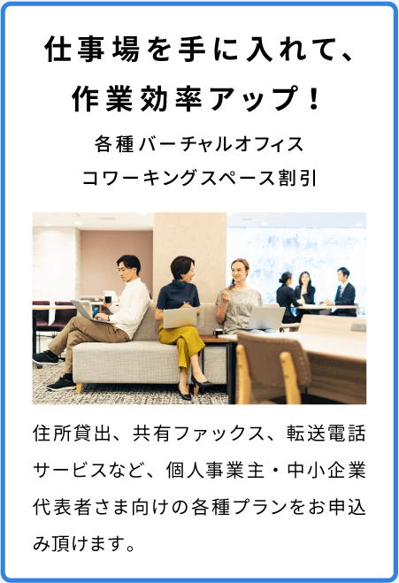
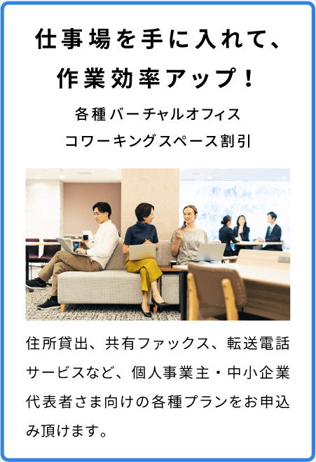
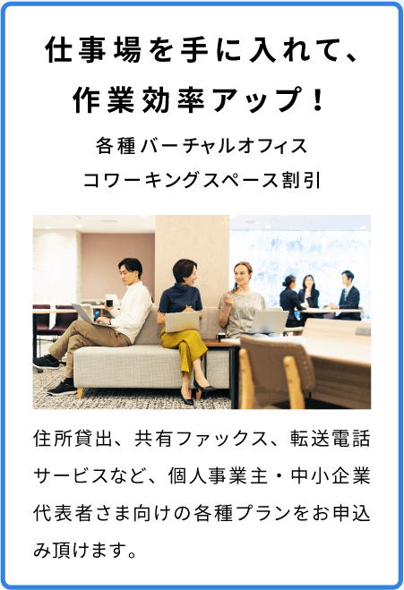

サービス
テックビズゴールドカードでお得が増える
テックビズゴールドカードは、経費や記帳／代行サポート、コワーキングスペース、
電子契約サーピスの利用などフリーランス活動の中のいろいろなサービスに使えます。


 

テックビズゴールドカードは、経費や記帳／代行サポート、コワーキングスペース、
電子契約サービスの利用などフリーランス活動の中にいろいろなサービスに使えます。
驚異の還元率
年会費初年度無料
確定申告 / オフィス利用が無料に
テックビズゴールドカードは、経営者や個人事業主向けに作られたビジネスカードです。
加入すると、事業だけではなくプライベートで役立つサービスも盛り込まれています。
テックビズゴールドカードでお得が増える
テックビズゴールドカードは、経費や記帳／代行サポート、コワーキングスペース、
電子契約サーピスの利用などフリーランス活動の中のいろいろなサービスに使えます。

ポイントが貯まる・増える
テックビズゴールドカード基本情報


お申し込み手順
テックビズIDに
ログイン/会員登録する
カード申し込み
手続きをする
本人確認書類を
返送する
テックビズIDに
ログイン/会員登録する
カード申し込み
手続きをする
本人確認書類を
返送する